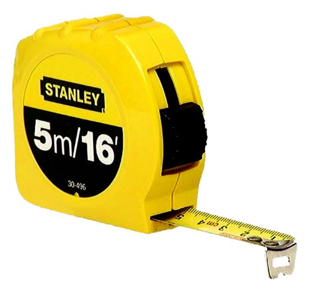
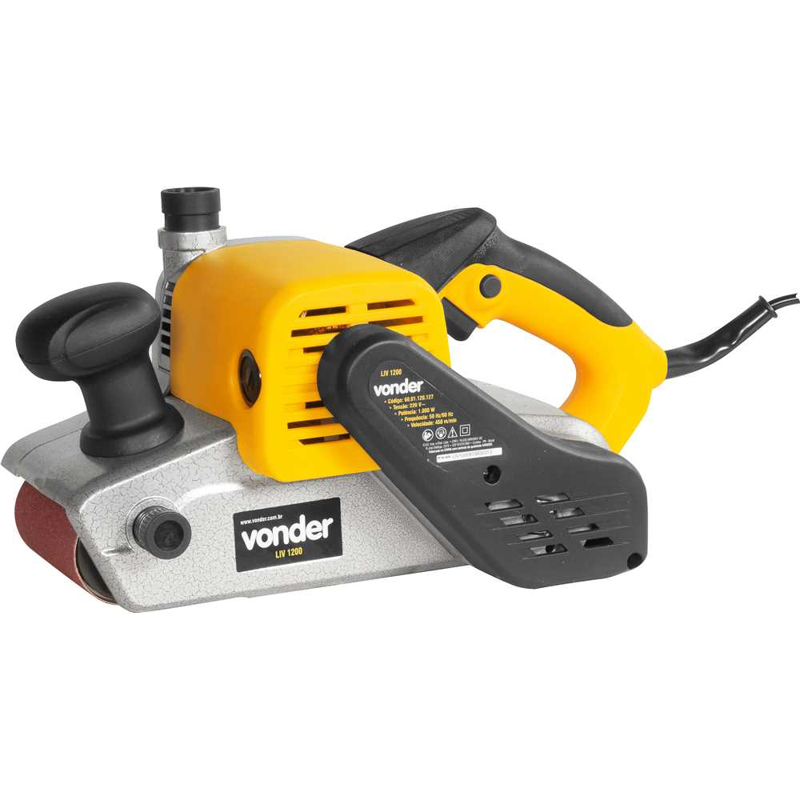
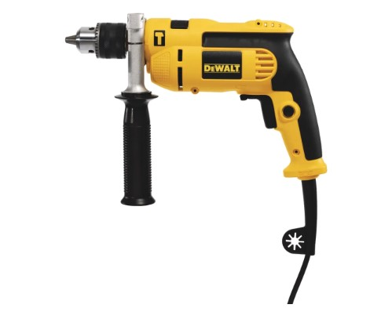
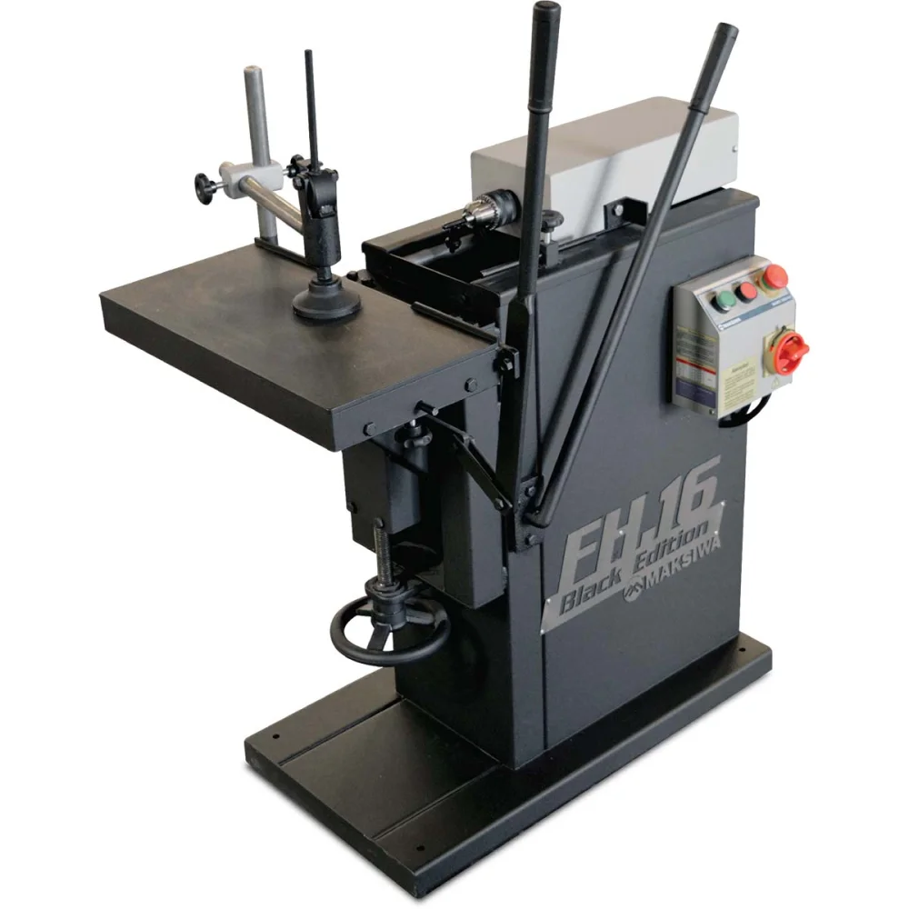
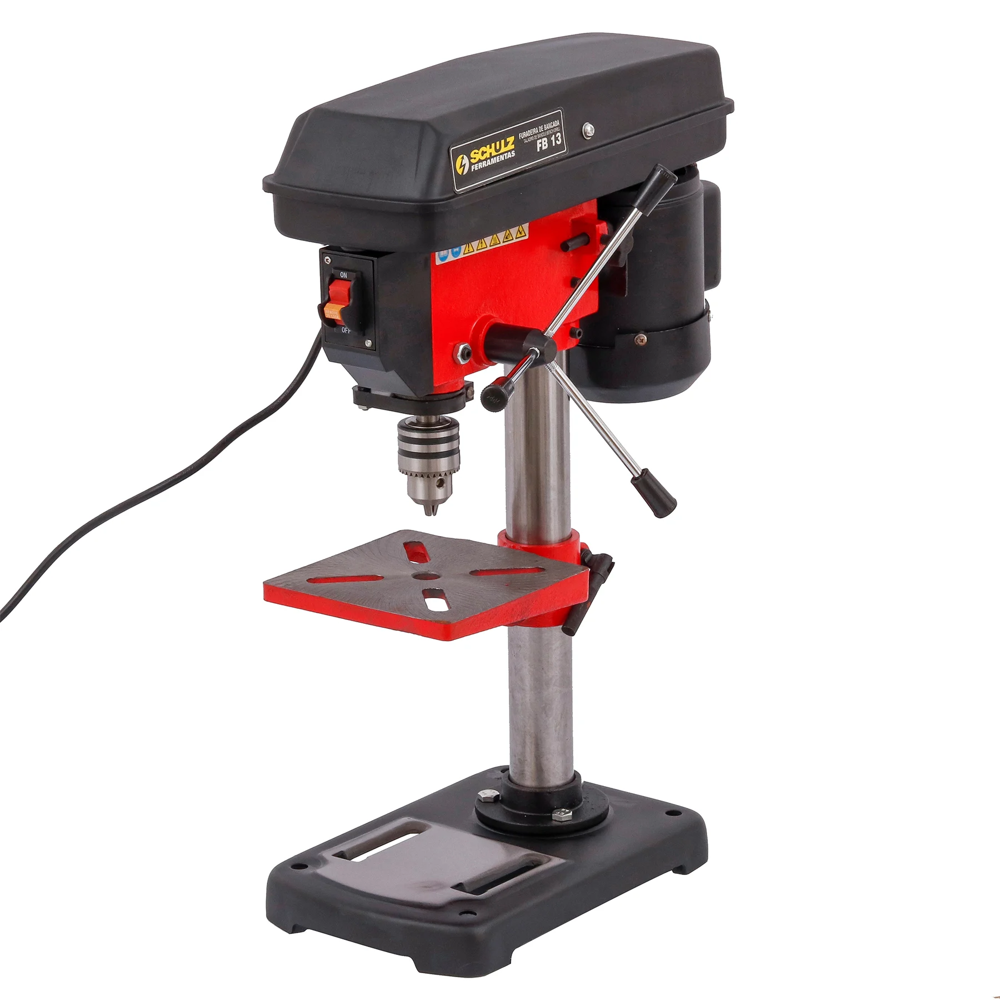
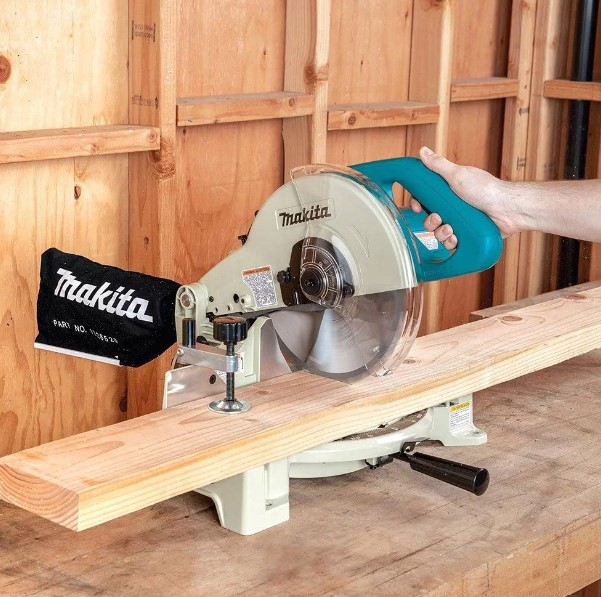
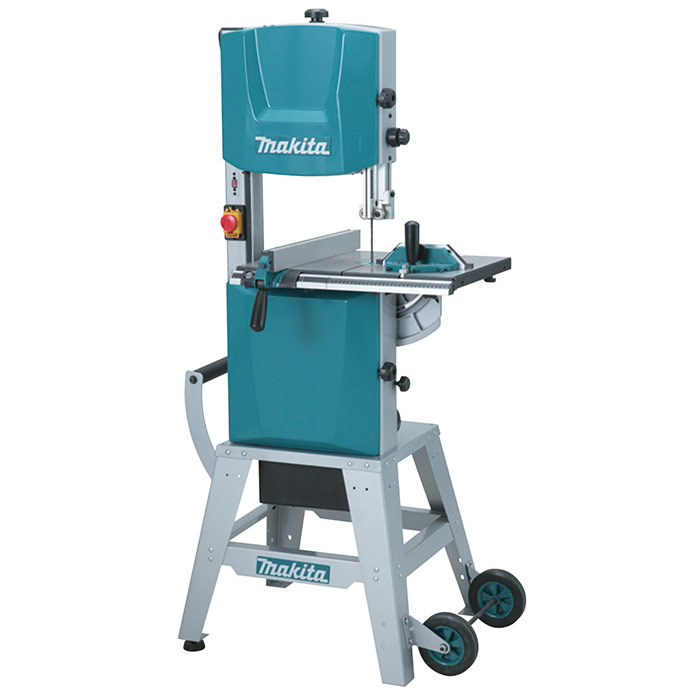
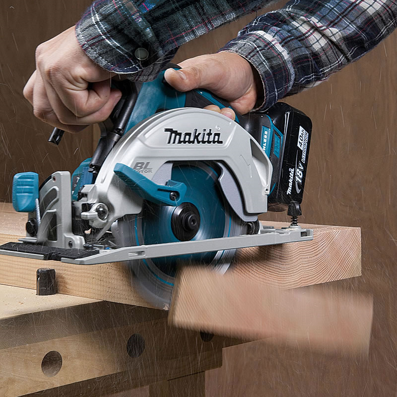
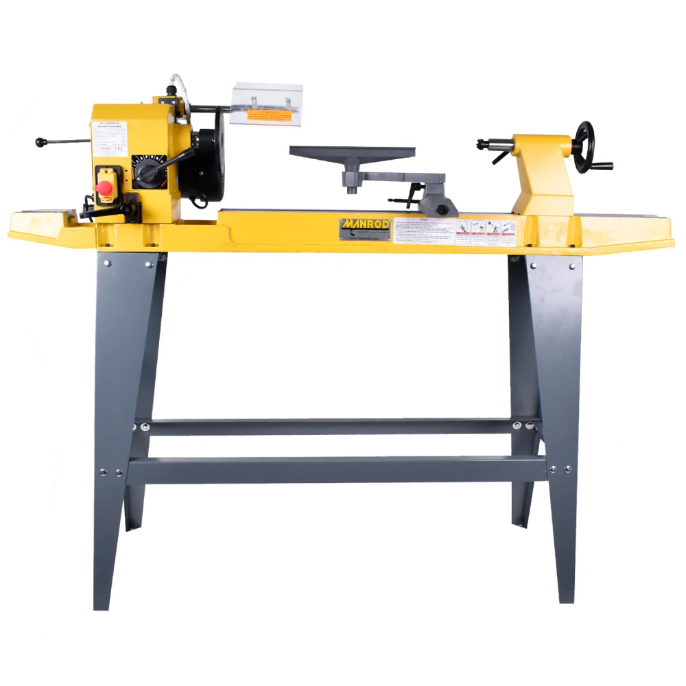

A concepção de um mobiliário pode envolver diversas técnicas e etapas para sua produção. O conhecimento do processo produtivo e de seu ferramental permite que o designer de interiores desenvolva um projeto mais otimizado e assertivo. Para compreender melhor como uma peça de mobiliário é fabricada, é fundamental que você conheça os principais equipamentos e ferramentas utilizados em uma marcenaria. Que tal começar?
Clique ou toque para visualizar o conteúdo.
A trena já é uma velha conhecida sua, não é mesmo? Um bom marceneiro sempre carrega sua trena manual de no mínimo três metros. Mas existem trenas manuais de maior metragem. Além disso, como você também já sabe, existem as trenas eletrônicas, que agilizam o processo de levantamento métrico dos ambientes. Para o trabalho direto com madeira, porém, nada substitui a trena manual.
Toque na imagem para ampliá-la.
Trena de três metros – Stanley
Fonte: Artesana (s.
d.)
É uma lixadeira mais potente, indicada para lixar grandes superfícies, pois a lixa em forma de cinta apresenta um desbaste mais agressivo, retirando mais material, sendo assim voltada para trabalhos robustos e mais complexos.
Toque na imagem para ampliá-la.
Lixadeira de cinta
Fonte: Ferramentas Gerais (c2021)
Existem três tipos básicos de lixas utilizadas na confecção de mobiliário: a lixa para madeira, a lixa ferro e a lixa d’água. A lixa para madeira apresenta duas opções: a lixa A237 e a lixa A219 ou lixa No-Fil. A lixa A237 é destinada ao lixamento de madeiras cruas ou pouco trabalhadas (sem tinta ou verniz). Já a A219 ou No-Fil é direcionada para madeiras envernizadas, MDP (medium density particleboard), madeiras laqueadas ou seladas.
As lixas para ferro e metais são confeccionadas em tecido, o que confere maior resistência ao lixar, pois não rasga facilmente. As lixas para ferro podem ser usadas em metais pintados ou enferrujados.
Para dar acabamento, a lixa d’água é ideal, pois pode ser utilizada úmida, evitando sujeira e conferindo uma finalização mais homogênea.
Todos esses tipos de lixas são classificados por sua granulação, que pode variar de 36 a 600. Quanto maior a granulação da lixa (mais grossa), menor é sua numeração, ou seja, as lixas mais finas (de menor granulação) têm sua numeração maior. Portanto, para cada aplicação é recomendado um tipo diferente de granulação:

Toque na imagem para ampliá-la.
Lixas
Fonte: Norton Saint-Gobain (c2023)
Ferramenta elétrica portátil, que permite fazer furos em materiais como madeira, metal, plástico e alvenaria. Para furos em diferentes materiais, basta trocar o tipo de broca utilizada na ponteira. No mercado é possível encontrar modelos que unem furadeira e parafusadeira. Porém, para melhor rendimento e potência, é melhor ter as duas ferramentas separadas, garantindo mais força e impacto em ambas.
Toque na imagem para ampliá-la.
Furadeira manual elétrica – DeWalt
Fonte: Tarugão (c2022)
A furadeira de bancada horizontal é um equipamento de porte médio, designada para furações, instalações de cavilhas, fechaduras e dobradiças, e pode ser adaptada para trabalhos desempenhados em furadeiras de bancada vertical e para afiação de lâminas de desempenadeiras e desengrossadeiras. É uma ferramenta fácil de usar, de baixo custo e durável. Com a utilização de acessórios, ela pode ainda entalhar e lixar elementos côncavos.
Toque na imagem para ampliá-la.
Furadeira de bancada horizontal
Fonte: Ferramentas Kennedy (2023a)
A furadeira de bancada vertical é utilizada para executar furos em 90° passantes ou com definição de profundidade (não passantes), garantindo precisão e excelente qualidade final. Esse tipo de furadeira apresenta praticidade e versatilidade, apresentando menor risco de desvios e solavancos.
Toque na imagem para ampliá-la.
Furadeira de bancada vertical
Fonte: Leroy Merlin (c2023)
Ferramenta destinada para execução de cortes precisos com acabamentos milimétricos, desempenhando cortes em diversos ângulos, geralmente até 90°. Pode cortar diversos tipos de materiais, sendo necessário alterar apenas o tipo de disco de corte. Realiza trabalhos robustos e apresenta protetor de lâmina para evitar acidentes e controle de profundidade para evitar que atravesse o material quando necessário.

Toque na imagem para ampliá-la.

Serra de esquadria – Makita
Fonte: Makita (c2021)
É uma máquina elétrica de porte médio que dispõe de mesa, manípulos para regulagem, réguas para alinhamento e uma serra em forma de fita, que permite cortes retos, curvos e profundos de uma forma rápida e produtiva. O modelo a seguir é da marca Makita e é móvel, fácil de deslocar para qualquer lugar da marcenaria.
Toque na imagem para ampliá-la.
Serra fita móvel – Makita
Fonte: Makita (c2022c)
Destinada a serrar madeira e outros materiais, dependendo do tipo de disco de corte utilizado, a serra circular tem uma rotação mais baixa, sendo ideal para cortes retos. Por ser menor e portátil, apresenta maior versatilidade quando comparada a outras serras.
Toque na imagem para ampliá-la.
Serra circular
Fonte: Makita (c2022b)
É uma máquina que apresenta um sistema de rotação no qual a peça de madeira é acoplada e rotacionada em alta velocidade a fim de ser desbastada com o uso de cinzéis de diversos tipos e formas. Cinzéis são ferramentas de corte projetadas especificamente para moldar e esculpir peças cilíndricas de madeira em um torno, permitindo a criação de detalhes ornamentais e acabamentos precisos.
Toque na imagem para ampliá-la.
Torno
Fonte: Ferramentas Kennedy (2023e)